last (la:st, l�st), a substantive. Forms:
- (before 1100)
L�st Old English Masculine: footstep.
L�st Old English Feminine: boot.
L�ste Old English Feminine: Shoemaker's last, cognate with:
- Dutch leest masculine
- Old High German leist (Middle High German leist, modern German leiste(n masculine), last)
- Old Norse Leist-r foot, sock (south-western Danish l�st last)
- Gothic laist-s footstep, track (????), cognate with:
Old High German (wagan) -leisa track, rut (Middle High German, leis(e feminine), geleis truckway, modern German geleise, gleise rut); by most recent scholars referred to a Teutonic root *lais- (:l�s-) to follow a track ...
- (14th - 18th centuries)
laste- (14th - 15th centuries
lest(e)- (14th century on)
last
- (Obsolete) A footstep, track, trace. After Old English this only appears in the Scottish phrase not a last: nothing, not at all.
- First documented appearance of the term is in Beowulf...
- A wooden model of the foot, on which shoemakers shape boots and shoes.
- c1000
�LFRIC Gloss. in Wr-W�lcker 125/32 calopodium uel mustricula, laeste. a1300 Sat. People Kildare xiii. in E.E.P. (1862) 154 Hail be ye sutlers [? read sutars] wi� your mani lestes....
A Short History of Lasts
The origins of shoes are obscured by the distance of history, and like them, the origin of the last is equally hidden in that same distance. Tradition among shoemakers would imply that lasts have always been used, alongside other ancient tools like the boar's bristle, flax thread and the curved awl, if not since Adam was handed his first lasts after being tossed from the Garden, at least since the day that some nameless caveman got tired of wearing leather bags on his feet and so invented shoemaking. However, while tradition can tell us a great deal about the people who maintain those traditions, tradition is not history. Ideally, history is determined by facts that can be documented and studied objectively (I should note that this view of history is at variance with some of the schools of thought in historicial studies in the past decades. While I accept the reality of relativism in history, I'm not sure that we should use that as an excuse to stop searching for an objective truth).
This particular question came about when I was told that it was impossible to make a turnshoe without a last. This isn't true, and I know it since I've done it many times. So I developed a hypothesis that said that since it wasn't necessary to use a last to do turned work, they didn't. I assumed that to support this hypothesis that the evidence would show a paucity of lasts in historical contexts, and those that did exist would not show signs of shoemaking (distinctive tack holes, distinctive sole shapes, etc). So then I gathered the evidence I could, and attempted to disprove my hypothesis.
The evidence as it exists consists of a large number of shoe soles and:
| When | Where | Picture | Notes |
| 2800-1000 BCE | ??? | --- | Stone Neolithic forms, now at the Salzburg museum and Koblenz 1 |
| early Iron Age | Hallstatt | --- | Clay Neolithic forms10 |
| c.5th C BCE | Greece | --- | Portrait of what might be a boot last is on a vase. |
| c0-4th C | Roman Empire (Sandy, Bedfordshir) |
 |
The lasts used by the Romans are generally described as being "iron feet", although they more closely resemble what we woud thing of today as cobbler's lasts. They were use flatten the hobnails used on the sole. This is a different style of shoemaking than we are otherwise describing10 |
| 1-6th C | Coptic | --- | Now found at the Bally Shoe Museum -- these purportedly reveal tell-tale center-sole nail and tack holes in the sole, as left from the temporary pinning of it to a last with nails10 If these are valid lasts, then it's plausible that the lasting idea was developed in the east. |
| c.150-832 | Akhmin (Panopolis) - Coptic | --- | "Straight" lasts. Most look 5-6th century10May be the same as mentioned above and below. |
| c.4th C | ???? | --- | At the Bally Shoe Museum10 |
| about 400? | Rotweill, Germany |  |
It is not clear just when this last could be dated to. (picture by D.A. Saguto, after a photo in G�pfrich) |
| 7th-8th C | Khadalik | --- | A wooden last in the British Museum with a very small removable back section with cloth in between the two pieces2 |
| 8th C | Hedeby |  |
First signs of turnshoes at Hedeby5 4 Hedeby lasts/Hedeby finds range from the 8th C - 15th C |
| c850 | Oseberg | --- | Oseberg turnshoes |
| 9th C | Co. Antrim, Ireland |  |
4 (Picture after Goubitz) |
| 10th-11th C | Wolin, Poland | --- | ? |
| 10th C? | Novgorod |  |
4, 6 |
| 10th C | Germany |  |
4 (Picture after Goubitz) |
| ??? | Dublin |  |
Duckbilled shaped last |
| 1000 | Jorvik |  |
Lasts ("type is said to be common in Poland from the 11th C to 13th C")8 |
| c1100 | ??? | --- | Norse shoes change their heel shapes from the raised, pointed heel being most common to the rounded flat heel. Rands start to appear in shoes. |
| 11-15th C | ??? | --- | Moscow Hist. Museum, 2 adult's lasts, 2-piece [toe missing on one]11 |
| c1200 | ??? | --- | Approximate origins of the Cordwainer's guilds. |
| c1210 | ??? | --- | By this time, Rands have been adapted for used in European shoes, and their use has spread. |
| Between 1218 and 1229 | Paris, France | --- | Dictionarius of John de Garlande may refer to using "forumpedias" for smoothing and shaping.13 |
| Late 12th - early 13th | Bryggen, Norway |  |
4 lasts excavated from a shoemaker's workshop in the Gullskoen site7. |
| about 1300? | Novgorod |  |
4, 6 |
| c1350 | Sandnes, West Settlement, Greenland |
  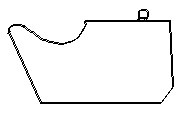 |
The Greenland Lasts can not be any more recent than this, and based on their placement just under the top layer of debris and soil, they are not much older. In any case, they are unlikely older than 1000 CE.4 |
| c1350 | Stockholm, Sweden |  --- |
2 (drawing from photo) |
| after 1350 | ??? | --- | Lasts seem to be clearly used for building turnshoes on. Rands start being used as "welts" c. |
| about 1400 | Lubeck |  |
4 (Picture after Goubitz) |
| after 1400 | Netherlands |  |
4 (Picture after Goubitz) |
| 1430 | Warsaw |  |
Supposedly these show wear-marks on the bottom indicative of repeated tacking as in lasting over them11 |
| c1430? | Warsaw |  |
4 (Picture after Goubitz) |
| before 1462 | Novgorod |  |
4, 6 (Picture after Goubitz) |
| c1480 | Germany | --- | "Modern"Welted shoes start to appear10, and move quickly spread like a leather plague |
| ???? | Scotland |  |
"Souter Last" at Northampton Central Museum. All it has is "Souter Last" on a 19th century museum label stuck on it--no provenience10 |
So, what does this tell us? It clearly partially disproved my initial hypothesis. At least by the 1300s, and likely earlier, lasts were being used with some aspects of making turned shoes. It also suggests that lasts may have developed with the turned shoe, in the late Roman era. However, even in the Roman world, the turned shoe was not the dominant form (and in fact, it can be argued that these were not true "turned shoes" (See Turned)). In those areas where the turned shoe faded from use with the decline of Imperial culture, the last seems to disappear as well. It may remain in use in Egypt. Did the use of the last die out? The evidence is not conclusive. When the turned shoe returns to northern Europe with the Norse, the last appears with it, but the Hedeby shoes do not clearly seem to have been made on the lasts found with them. If not, then they were introduced for some other purpose - such as forming a backing for decorating the leather, for shaping the newly made shoes, or something else. As the turned shoe seems to spread across Europe, the last appears to have followed. However, the use of tacks and such is not really clear until later on, either from holes in the wood, or holes in the soles.
One thing that is clear from experimentation is that shoes made on a last can better be made with a narrow and fitted sole (one that more better fits the instep, like the later medieval shoes) without the upper leather bunching, than shoes made without a last. Shoes made without a last often have a wider, more generalized sole. This dichotomy in sole shapes does appear in the shoes from the Middle Ages, with the earlier shoes having wider soles, and thinner, more shaped soles, after the late 1200s or so.
On the other hand, a short study of archaelogical shoes at the Museum of London and Northampton shoe collections showed none of the nail holes in the sole that would be expected to be found with a lasted shoe, when looking at turned shoes from the late 15th century, while there do appear to be nail holes in at least some of the shoes from Nordic York. The lasts, which I have not examined personally, may or may not have any clear lasting tack holes.
Finally there is a serious problem making a turned shoe with any significant welt on a last, such as are found on "turned welt" shoes - in essence there is no room between the upper and the last for the welt, and the disfiguration that doing so is fairly obvious on any upper it was made on. This does not appear on any of the shoes I have examined, nor has it been mentioned by any past shoe researcher. Logically then, shoes may not have been made (i.e. assembled) on the last.
So, ultimately, we really don't know at this time how the last was used for making turned shoes. I have to wonder though if the uppers weren't formed on the last after closing, and, after they had been completely dried, perhaps assembled with the welt off the last.
My current working hypothesis is that by about 1300 lasts were used by some people at some times. Other people, and at earlier times, may or may not have been using them to build shoes on. They may have been using them for other things, like shaping and helping to form decoration.
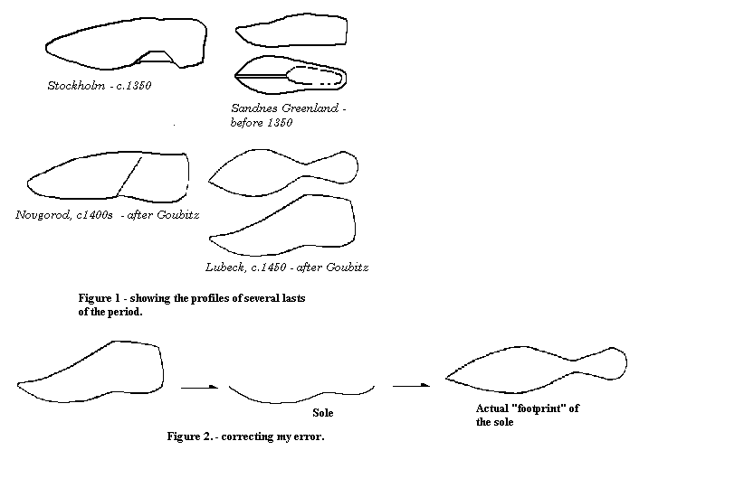
For more of a discussion of making modern, welted shoes, try Making a Modern Shoe, You may also be interested in information on how to Make lasts yourself.
Return to Contents
Footwear of the Middle Ages - Lasts, History and use in Medieval Shoes, Copyright
� 1999 I. Marc Carlson.
This page is given for the free exchange of information, provided the author's name is
included in all future revisions, and no money change hands, other than as expressed in
the Copyright Page.